Резюме
В настоящем отчёте изложены результаты миссии по международному наблюдению за выборами, проведённой автором в качестве международного эксперта-наблюдателя на выборах депутатов Государственной Думы Федерального Собрания Российской Федерации (IX созыв), состоявшихся 18–20 сентября 2026 г. Наблюдение осуществлялось в Рязанской области; ему предшествовало обучение, организованное Center for International Interaction and Cooperation (CIIC) в рамках программы «School of Electoral Experts».
Документ состоит из двух частей. В части I описана избирательная система России: её смешанный характер (225 мандатов распределяются по пропорциональной системе и 225 — по одномандатным избирательным округам), основополагающие принципы, закреплённые в Федеральном законе № 67-ФЗ, система избирательных комиссий, данные о выборах IX созыва (4 379 зарегистрированных кандидатов и 112 865 053 избирателя, обладающих правом голоса), способы голосования, включая дистанционное электронное голосование, технологическая модернизация избирательного процесса и его последующая адаптация к западным ограничениям, а также механизмы наблюдения и видеонаблюдения. В части II представлены контекст Рязанской области, оценки, данные примерно на десяти избирательных участках в течение трёх дней голосования, встречи с региональными избирательными органами, сравнительный анализ с избирательной системой Уругвая и выводы автора.
Среди основных результатов наблюдения следует отметить: чёткую маркировку избирательных участков и доступность информации о кандидатах и партиях при входе в помещения; бюллетени, не содержащие элементов, позволяющих идентифицировать избирателя; кабины, защищённые шторами из плотной ткани и расположенные вне зоны обзора видеокамер; ящики с четырьмя пронумерованными пломбами; время пребывания избирателя на участке от 3 до 6 минут без сколько-нибудь существенных очередей; а также праздничную и деятельную атмосферу в течение всех трёх дней голосования.
Вместе с тем в отчёте затрагиваются вопросы, заслуживающие более глубокого анализа: соотношение прозрачности ящиков для голосования и принципа тайного голосования, влияние продления голосования до трёх дней и возможное воздействие дистанционного электронного голосования на очный опыт участия в выборах. Следует оговорить, что выводы основаны на ограниченной выборке (около десяти участков и не менее пятнадцати избирателей, за голосованием которых велось наблюдение в режиме реального времени) и должны интерпретироваться в этих пределах.
Ключевые слова: международное наблюдение за выборами, Государственная Дума, смешанная избирательная система, тайное голосование, дистанционное электронное голосование, видеонаблюдение, Рязанская область.
1 Введение
В ходе моего участия в Международном молодёжном фестивале (International Youth Festival) мне предложили выступить в качестве международного эксперта-наблюдателя на выборах депутатов Государственной Думы. Должен признать, что я этого не ожидал. Это было моё первое участие в качестве международного наблюдателя, хотя определённый опыт у меня уже имелся: я изучал организацию выборов и работал в качестве члена избирательной комиссии на выборах в своей стране, Уругвае.
Чтобы располагать необходимым инструментарием для оценки избирательного процесса, я прошёл обучение, организованное «Center for International Interaction and Cooperation» (CIIC, б. д.), с целью наблюдения за упомянутыми выборами. Программа под названием «School of Electoral Experts» реализовывалась в ходе указанного мероприятия и включала насыщенные дни семинаров, тренингов, мастер-классов и интерактивных занятий. Её руководителями и кураторами были Арег Агасарян и Мария Прокофьева; в работе программы участвовала команда видных экспертов по вопросам выборов.
В рамках Региональной программы, проводившейся после мероприятий фестиваля, я был направлен в Рязанскую область — регион, расположенный примерно в 210 км от Москвы, столицы страны. В городе Рязани, административном центре региона, я также осуществлял свою деятельность в качестве наблюдателя на выборах.
Настоящий документ состоит из двух частей: в первой рассматривается российская избирательная система, её достоинства и особенности, а во второй документируются наблюдения и впечатления, полученные во время моего пребывания в Рязанской области.
В заключительной части документа я излагаю свою оценку проведённых наблюдений и делюсь мнением о процессах, о людях, с которыми мне довелось взаимодействовать, а также о сходствах и различиях российской и уругвайской избирательных систем. С этой целью в главе 9 проводится сопоставление обеих систем, а в главе 10 изложены мои выводы.
Juan Rodriguez Mercant
Уругвай
ЧАСТЬ I — ИЗБИРАТЕЛЬНАЯ СИСТЕМА РОССИИ
2 Нормативно-правовые и институциональные основы избирательной системы
2.1 Особенности выборов
Конституция Российской Федерации предусматривает три вида выборов:
- Федеральные выборы
- Региональные выборы
- Муниципальные и местные выборы
Выборы депутатов Государственной Думы определяют состав нижней палаты Федерального Собрания — 450 мест. Соответственно, эти выборы относятся к первой категории (федеральные).
Выборы проводятся по смешанной избирательной системе, в рамках которой параллельно осуществляются два процесса:
- Пропорциональный: определяются 225 мандатов. Мандаты распределяются пропорционально доле голосов, полученных политическими партиями (выборы по партийным спискам). Каждая партия должна представить список от 200 до 400 кандидатов. Кандидатов выдвигают политические партии.
- Мажоритарный: определяются остальные 225 мандатов. Посредством этого механизма избираются депутаты по одномандатным избирательным округам. Кандидаты могут быть членами политических партий либо не иметь партийной принадлежности.
Страна разделена на 225 одномандатных избирательных округов (см. рисунок 1).
Особенность этой системы состоит в том, что голоса, поданные за партийные списки и за отдельных кандидатов, подсчитываются независимо друг от друга.
Рисунок 1
Карта 225 одномандатных избирательных округов Российской Федерации
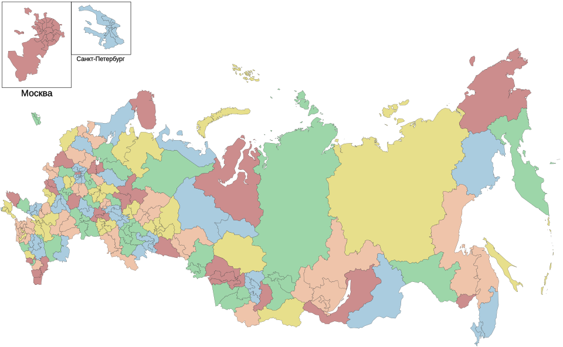
Примечание. Каждый субъект Российской Федерации включает не менее одного округа. Воспроизведено по: «Constituencies of Russia», б. д., Wikipedia (https://en.wikipedia.org/wiki/Constituencies_of_Russia).
Таким образом, при голосовании избиратель получает два бюллетеня: один — для голосования за политическую партию (пропорциональное представительство), другой — за кандидата на депутатский мандат (мажоритарное представительство).
2.2 Основополагающие принципы выборов
Организация и проведение выборов и референдумов в Российской Федерации основываются на основополагающих принципах, закреплённых главным образом в Федеральном законе № 67-ФЗ (Российская Федерация, 2002). К ним относятся, в частности:
- Всеобщее избирательное право
- Тайное голосование
- Свободное и добровольное участие в выборах
- Открытость и гласность деятельности избирательных комиссий
- Обязательность и периодичность выборов
- Независимость избирательных комиссий
Подробное изложение этих принципов содержится в упомянутом законе от 12 июня 2002 г. (Российская Федерация, 2002).
2.3 Система избирательных комиссий
Всего в Российской Федерации действует 100 000 избирательных комиссий. Они образуют иерархическую систему.
По данным ряда опросов, уровень общественного одобрения деятельности избирательных комиссий неуклонно растёт с 2016 года (см. таблицу 1). Граждане считают, что эти органы обеспечили доверие к избирательным процессам и их высокое качество.
Таблица 1
Динамика уровня общественного одобрения деятельности избирательных комиссий, 2016–2024
| Год | Уровень одобрения |
|---|---|
| 2016 | 47 % |
| 2018 | 66 % |
| 2021 | 80 % |
| 2024 | 83 % |
Примечание. Данные представлены в ходе обучающих мероприятий.
2.4 Члены участковых избирательных комиссий
Члены участковых избирательных комиссий могут быть государственными служащими; они привлекаются к проведению выборов на период их проведения.
3 IX созыв Государственной Думы: общие сведения
3.1 Продолжительность выборов
Выборы проводятся в течение трёх дней — с пятницы, 18 сентября, по воскресенье, 20 сентября. Каждый день голосования начинается в 08:00 и завершается в 20:00.
3.2 Сведения о выборах депутатов Государственной Думы IX созыва
Зарегистрировано 20 партий, из которых:
- 17 вправе принять участие в выборах
- 11 вправе участвовать в выборах без сбора подписей
Всего зарегистрировано 4 379 кандидатов:
- 2 776 кандидатов включены в федеральные списки, представленные политическими партиями
- 1 603 кандидата баллотируются по одномандатным округам
- 1 599 кандидатов выдвинуты 11 политическими партиями.
- Ещё 4 кандидата — самовыдвиженцы.
3.3 Избиратели, имеющие право голоса
По состоянию на 1 июля 2026 г. число граждан, имеющих право голоса, составляло (см. таблицу 2):
Таблица 2
Граждане, имеющие право голоса, по состоянию на 1 июля 2026 г.
| В Российской Федерации | 111 037 047 человек |
| За пределами Российской Федерации | 1 816 504 человека |
| В городе Байконур | 11 502 человека |
| Всего | 112 865 053 человека |
Примечание. Число избирателей указано по данным консульского учёта. Данные представлены в ходе обучающих мероприятий.
На этих выборах около 1,6 млн новых избирателей получат возможность проголосовать впервые.
В ходе избирательного процесса мы стали свидетелями того, что молодым избирателям при подаче первого голоса представители избирательных органов вручают подарок, символизирующий первый акт суверенного волеизъявления.
3.4 Новая география
Впервые в истории избиратели четырёх новых регионов, вошедших в состав Российской Федерации, смогут принять участие в выборах в Государственную Думу.
Четыре новых субъекта Российской Федерации:
- Донецкая Народная Республика (3 одномандатных округа)
- Луганская Народная Республика (2 одномандатных округа)
- Запорожская область (1 одномандатный округ)
- Херсонская область (1 одномандатный округ)
Взамен из реестра исключены иные образования.
4 Избиратель и процедура голосования
4.1 ИнформУИК
Официальная инициатива ЦИК России. Её основная цель — персонализированное, индивидуальное информирование граждан о предстоящих выборах непосредственно по месту жительства.
Цели и задачи
- Прямое информирование: уведомление избирателей о датах и времени голосования, а также о точном местонахождении своего избирательного участка (УИК).
- Формы голосования: разъяснение различных доступных способов голосования — очно, вне помещения для голосования (для лиц с ограниченной мобильностью) или посредством дистанционного электронного голосования (ДЭГ).
- Проверка данных: подтверждение и уточнение сведений об избирателях для обеспечения точности списков избирателей.
Порядок проведения обхода
- Без агитации: участникам обхода строго запрещено вести агитацию за какого-либо кандидата или политическую партию. Их роль носит исключительно информационный характер.
- Обязательная идентификация: участники обхода, как правило, работают парами и обязаны иметь при себе хорошо заметные официальные атрибуты: удостоверение избирательной комиссии с фотографией и печатью, сумку или жилет с логотипом проекта, а также информационные буклеты.
- Использование технологий: на телефонах или планшетах используется специальное мобильное приложение «ИнформУИК», позволяющее фиксировать факт посещения жилого помещения и проводить краткий необязательный цифровой опрос.
- Время посещений: как правило, обходы проводятся по рабочим дням во второй половине дня (с 17:00 до 20:00), а в выходные — с 10:00, чтобы застать граждан дома.
Согласно докладу сотрудницы ЦИК России Эльмиры Хаймурзиной, проведение ИнформУИК в 2026 г. дало следующие масштабные результаты (Территориальная избирательная комиссия Пролетарского района города Ростова-на-Дону, 2026):
- Задействованный персонал: в обходах приняли участие 288 804 человека (члены и организаторы местных избирательных комиссий).
- Охват домохозяйств: мероприятие охватило 87 регионов России и позволило посетить более 48 млн жилых помещений (домовладений).
- Результативность контактов: граждане открывали дверь участникам обхода 39,5 млн раз, что позволило провести около 39 млн непосредственных индивидуальных бесед лицом к лицу.
4.2 Способы голосования
Существует несколько способов реализации избирательного права; ниже приведены некоторые из них (перечень не является исчерпывающим):
- Лично на избирательных участках. Избиратель должен прийти на участок, соответствующий адресу его места жительства.
- Голосование вне помещения для голосования (на дому). Бюллетень принимает член избирательной комиссии по месту нахождения избирателя при наличии обстоятельств, оправдывающих такой порядок.
- Дистанционное электронное голосование с использованием мобильных платформ
- Электронное голосование с использованием специальных терминалов
- Голосование на избирательных участках, образованных за пределами Российской Федерации
- Голосование на специальных избирательных участках в местах содержания под стражей
Такая гибкость способов голосования позволяет гражданам реализовать своё право даже во время отпуска, командировок или иных занятий — достаточно прийти на любой избирательный участок либо воспользоваться технологическим приложением.
По оценкам, число лиц, которые воспользуются дистанционным электронным голосованием (ДЭГ; англ. Remote Electronic Voting, REV), составит 23 млн.
4.3 Процедура голосования
4.3.1 Последовательность действий при голосовании
- Избиратель выясняет, на каком участке ему надлежит голосовать. Эта информация доступна на цифровых платформах, предоставляемых государством, например на портале «Госуслуги». Избиратели распределены по избирательным участкам по адресам и упорядочены по фамилиям.
- Прибыв на участок, избиратель подходит к столу выдачи бюллетеней и предъявляет паспорт члену УИК, ответственному за приём избирателей, проживающих по его адресу.
- Член УИК находит избирателя в списке избирателей и вносит данные о явке, в том числе время обращения.
- Избиратель направляется в кабину для тайного голосования с двумя бюллетенями и отмечает ручкой кандидата в одном из них и политическую партию — в другом.
- Выйдя из кабины, избиратель опускает бюллетени в ящик для голосования.
- После этого избиратель завершает участие в выборах; никакого подтверждения этого он не получает (см. рисунок 2).
Рисунок 2
Процесс голосования на избирательном участке с точки зрения избирателя
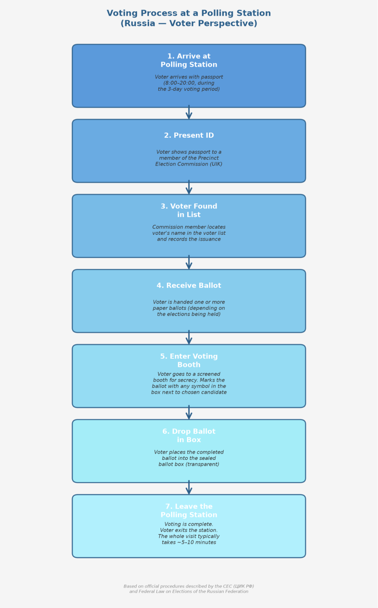
Примечание. Документация на английском языке. Составлено автором на основе официальных процедур Центральной избирательной комиссии Российской Федерации и российского избирательного законодательства.
5 Технологическая модернизация избирательного процесса
5.1 Современные стандарты, применяемые на выборах
- Цифровые сервисы для всех участников избирательного процесса через портал «Госуслуги»
- Для избирателей: 95 млн
- Для избирательных комиссий и организаторов выборов: 852 000
- Для кандидатов и политических партий: 38 500 кандидатов и 749 избирательных объединений
- Дистанционное электронное голосование (ДЭГ)
- Видеонаблюдение на избирательных участках
- Сбор подписей через портал «Госуслуги»
- Проверка и верификация подписей с использованием искусственного интеллекта
- Электронные списки избирателей
- Единая образовательная платформа
- Использование пломб с уникальными кодами и устройств для их считывания
- Использование беспилотников для доставки документации в отдалённые регионы (Республика Карелия, Архангельская область, Кемеровская область — Кузбасс)
- Низкие транспортные затраты, возможность дистанционной навигации, оперативность доставки.
5.2 Трансформация избирательной системы после введения западных ограничений
Хотя санкции и ограничения со стороны Запада в отношении России действуют уже несколько лет — главным образом с 2014 года, — февраль 2022 года стал рубежом. Уход из страны таких технологических гигантов, как Microsoft, Google и Apple, а также производителей компьютерного оборудования подтвердил реализацию новой российской стратегии в области информационных технологий.
Избирательная система опирается на цифровые платформы, обеспечивающие сохранность данных, информационный обмен между государственными органами и предоставление услуг гражданам.
5.3 ГАС «Выборы» 2.0 (Государственная автоматизированная система Российской Федерации «Выборы»)
ГАС «Выборы» — информационная система, предназначенная для автоматизации и информатизации избирательных действий и процессов. Она включает подсистемы регистрации избирателей, ввода сведений о кандидатах в депутаты, проведения голосования, подсчёта результатов и обработки данных для статистики. Система также обеспечивает поддержку действий и задач различных избирательных комиссий («GAS Vybory», б. д.).
Кроме того, система имеет интерфейсы обмена данными с:
- Министерством внутренних дел
- Федеральной налоговой службой
- органами записи актов гражданского состояния (ЗАГС)
Проект, в котором некогда участвовали такие технологические гиганты, как Oracle и Cisco, сегодня не зависит от иностранных технологий. Ниже приведены некоторые из отличий (см. таблицу 3), которые также были представлены в ходе обучения (см. рисунок 3):
Таблица 3
Сравнение ГАС «Выборы» ранее и в настоящее время
| Ранее | В настоящее время |
|---|---|
| Территориально распределённые сервисы | Централизованное сервисное решение |
| Неунифицированные и разрозненные базы данных | Централизованные базы данных с внедрением мер безопасности и резервирования |
| Построена на иностранном программном и аппаратном обеспечении | Построена на отечественном программном и аппаратном обеспечении |
Примечание. Материал, предоставленный в ходе учебных занятий.
Рисунок 3
Презентация о трансформации ГАС «Выборы 2.0» на учебном занятии в рамках Международного молодёжного фестиваля (International Youth Festival)
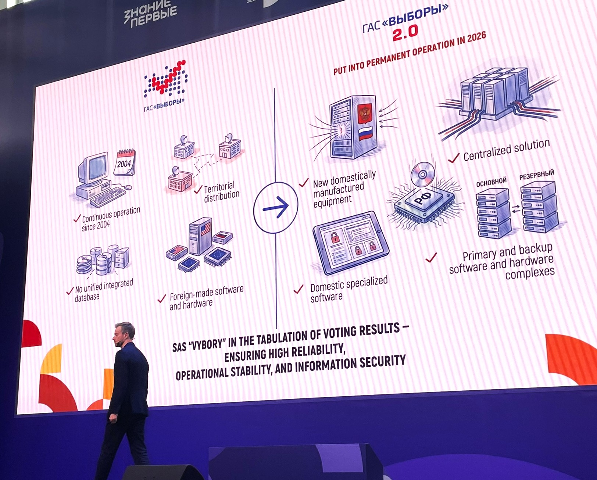
Примечание. Фотография автора: слайд, демонстрировавшийся на учебном занятии. Текст слайда выполнен на английском и русском языках.
6 Наблюдение за выборами
Законодательство Российской Федерации предусматривает различные механизмы мониторинга и контроля за процедурами, связанными с проведением выборов.
Между этими механизмами существует определённая иерархия, перечень которой приводится ниже:
- Внутренний контроль
- Наблюдатели от политических партий и кандидатов
- Независимые общественные наблюдатели
- Видеонаблюдение
- Международные наблюдатели
6.1 Наблюдатели
Законодательство допускает присутствие наблюдателей. Это лица, не входящие в состав организаторов избирательного процесса, которые действуют пассивно и лишь наблюдают за ходом выборов.
Международные наблюдатели не выбирают кандидатов и не меняют правила. Наблюдателя интересует избирательный процесс и его соответствие основополагающим принципам, закреплённым в праве.
Наблюдатель олицетворяет метод, а не позицию. Оценочные суждения откладываются до тех пор, пока не будет заполнен рабочий бланк.
Выделяют четыре причины, которые свидетельствуют о важности наблюдения:
- Легитимность. Важным выборам необходимы свидетели волеизъявления народа, находящиеся внутри процесса.
- Сдерживающий эффект. Сам факт присутствия наблюдателей может предотвратить возможные отклонения в ходе процедур.
- Общественное доверие. Укрепление основ гражданственности посредством объективных наблюдений за ходом выборов.
- Обучение и солидарность. Мы учимся у других стран тому, как они организуют свою демократию, а они узнают, какие методики применяются для наблюдения за выборами.
6.2 Международное наблюдение
Существует система оценки достоверности работы наблюдателей, призванная исключить попытки делегитимировать наблюдение ссылками на возможную предвзятость оценок. Декларация принципов международного наблюдения за выборами Организации Объединённых Наций (2005) — единый стандарт поведения, на который наблюдатели должны ориентироваться при осуществлении своих действий.
Законы и органы власти принимающей страны имеют приоритет над любыми предвзятыми представлениями, и наблюдатели должны особенно строго их учитывать.
6.2.1 Что может делать наблюдатель?
- Наблюдать с момента поступления бюллетеней до голосования и подсчёта голосов. Это должно осуществляться в рамках процедуры реагирования.
- Вопросы следует задавать по установленным каналам, предназначенным для разрешения сомнений, но ни в коем случае не напрямую участникам процесса.
- Выявленные факты необходимо фиксировать прежде всего в официальном документе, а не в социальных сетях.
- Наблюдатели могут сопоставлять свои наблюдения и выводы с наблюдениями и выводами внутренних наблюдателей.
6.2.2 Что не может делать наблюдатель?
- Не занимать чью-либо сторону и не высказывать предпочтений в отношении партии или кандидата, в том числе в неформальных беседах
- Не вмешиваться в процесс голосования и не прикасаться к бюллетеням. Наблюдатели — это глаза, а не руки.
- Соблюдать и уважать принципы тайного голосования.
- Нельзя общаться с прессой до публикации итогового доклада. Это может даже поставить под угрозу миссию.
Наблюдатель никогда не должен становиться главным действующим лицом: его роль — оставаться молчаливым и уважительным.
nom24.ru — цифровой портал мониторинга, на котором можно пройти обучение процедурам наблюдения и проверить полученные знания.
6.3 Штаб общественного наблюдения за выборами (Public Election Observation Headquarters)
С 2021 года во всех регионах Российской Федерации действуют штабы общественного наблюдения за выборами (Public Election Observation Headquarters). Они не заменяют работу избирательных комиссий, но обеспечивают независимый и дополнительный контроль в целях повышения прозрачности процедур.
6.4 Видеонаблюдение
Все избирательные участки оснащены системой видеонаблюдения в режиме реального времени. Эта система включает не менее одной камеры видеонаблюдения, направленной на:
- ящик для голосования, в котором находятся бюллетени
- стол членов избирательной комиссии, принимающих избирателей
- места, где находятся наблюдатели за ходом выборов
Система контролируется централизованно посредством прямой трансляции (стриминга) на порталах «Госуслуги» и Информационного центра ЦИК России (CEC Information Center), а также в штабах общественного наблюдения за выборами. На изображении с камер отображаются водяные знаки с указанием места, даты и времени.
Видеонаблюдение охватывает весь процесс голосования: со дня, предшествующего началу голосования, и до подсчёта голосов.
Во время посещения Штаба общественного наблюдения за выборами Рязанской области я смог убедиться, что с помощью веб-приложения можно было следить за ходом избирательного процесса в режиме реального времени (см. рисунки 4 и 5). Качество записи в целом хорошее, хотя и не отличается очень высоким разрешением. Тем не менее оно отвечает потребностям контроля.
Следует отметить и другой важный аспект: в ходе выборов действия и данные, записываемые видеокамерами, не обрабатываются с использованием искусственного интеллекта или алгоритмов машинного обучения (machine learning).
Вместе с тем в случае выявления какого-либо нарушения со стороны членов избирательных комиссий, наблюдателей или даже избирателей записи будут доступны для просмотра. По словам представителей Штаба общественного наблюдения за выборами, для получения доступа к просмотру видеозаписей необходимо располагать следующими сведениями:
- номер избирательного участка
- дата и время события
- описание события, о котором сообщается
Рисунок 4
Видеонаблюдение за избирательными участками в Штабе общественного наблюдения за выборами Рязанской области
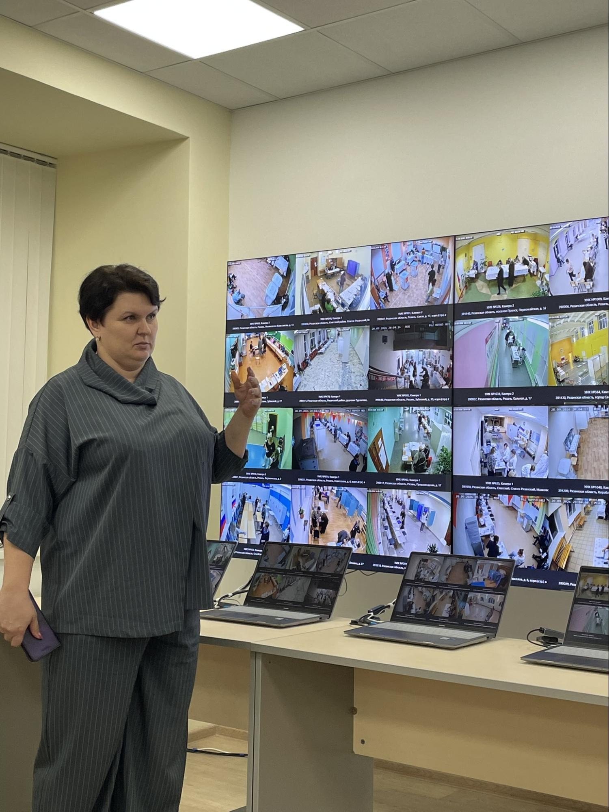
Примечание. Фотография автора, 20 сентября 2026 г.
Рисунок 5
Трансляция видеонаблюдения с избирательного участка № 758, просматриваемая с терминала Штаба общественного наблюдения за выборами Рязанской области
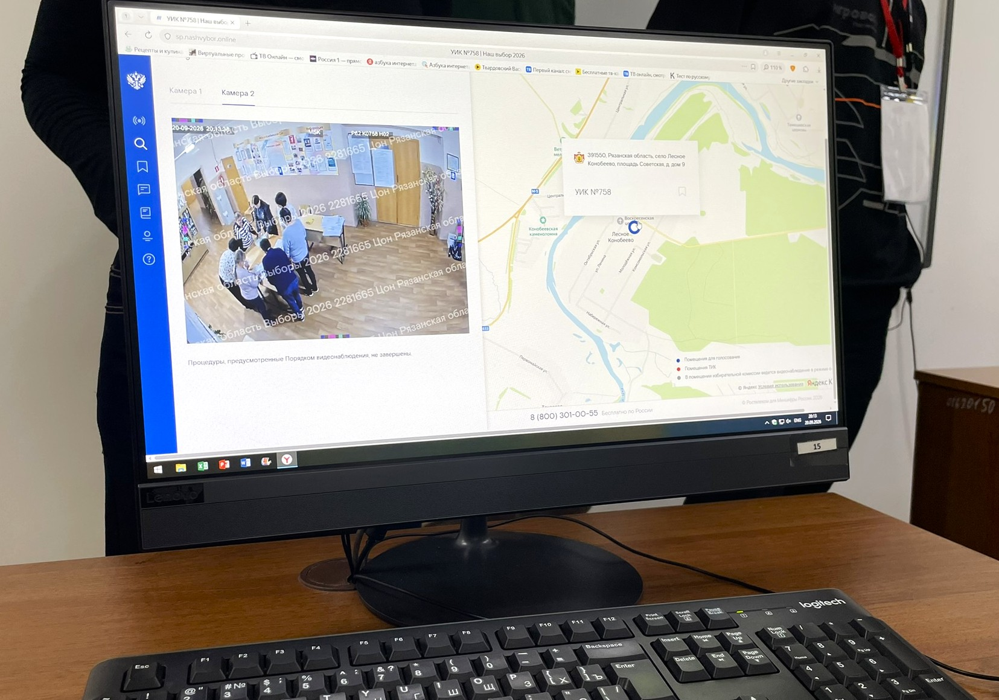
Примечание. Фотография автора, 20 сентября 2026 г. На официальном портале видеонаблюдения показана «Камера 2» участка № 758, расположенного в населённом пункте Лесное Конобеево.
ЧАСТЬ II — МИССИЯ НАБЛЮДЕНИЯ В РЯЗАНСКОЙ ОБЛАСТИ
7 Региональный контекст: Рязанская область
7.1 Рязанская область
- Административный центр: город Рязань (см. рисунок 6).
- Население: около 1 074 400 жителей на 1 января 2025 г. (Банк России, б. д.).
- Площадь: около 39 600 км² (Банк России, б. д.).
- Число избирателей: 865 194 на 1 января 2026 г. (Рязанские ведомости, 2026).
- Одномандатные избирательные округа: два (№ 157 «Рязанский» и № 158 «Скопинский»).
- Избирательные участки: 960 в период голосования в сентябре 2026 г. («АиФ Рязань», 2026).
- Губернатор: Павел Малков; должность замещается по итогам прямых выборов.
Рисунок 6
Карта Рязанской области
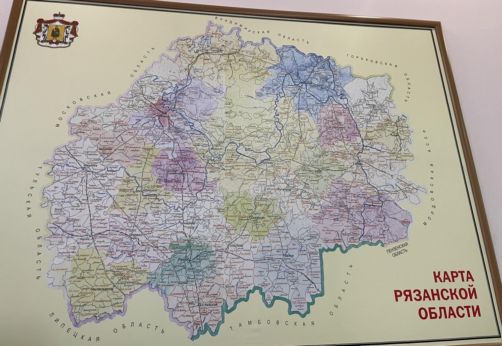
Примечание. Фотография автора: настенная карта Рязанской области (оригинальная надпись: «Карта Рязанской области»).
7.2 Организация по избирательным округам
Рязанская область разделена на два одномандатных избирательных округа: № 157 («Рязанский») и № 158 («Скопинский») (МедиаРязань, 2026). Областной центр поделён между ними: Московский и Советский районы города Рязани входят в первый округ, а Железнодорожный и Октябрьский районы — во второй. Каждый округ избирает одного депутата Государственной Думы. Действующая нумерация применяется с марта 2026 г. (ранее — № 156 и № 157); территориальные границы при этом не изменились (МедиаРязань, 2026).
7.3 Кандидаты
В округе № 158 список, размещённый в помещениях для голосования, включает шесть кандидатов, каждый из которых выдвинут отдельной политической партией (см. рисунок 10). Кроме того, избирателям предлагаются федеральные списки партий: на плакате Центральной избирательной комиссии, размещённом в помещениях для голосования, указаны десять партий с зарегистрированными списками (см. рисунок 11). В связи с этим избиратель должен опустить в ящик два бюллетеня: один — для голосования за кандидатов, другой — за политические партии.
Каким-либо группам или слоям населения не предоставляются преимущества в отношении доли занимаемых мест: приоритетом является решение корпуса избирателей.
7.4 Избирательная комиссия Рязанской области (ИКРО)
Комиссию возглавляет Андрей Анатольевич Сидоренко. К числу её основных задач относятся:
- контроль за соблюдением избирательного законодательства, для чего в её распоряжении имеется в том числе закрытая система видеонаблюдения в режиме реального времени за каждым избирательным участком;
- организация и проведение избирательного процесса в регионе;
- поддержание постоянной связи с Москвой в ходе избирательной кампании.
7.5 Электронное голосование в регионе
На этих выборах в Рязанской области возможность дистанционного электронного голосования (ДЭГ) не предоставлялась, однако предполагается, что она появится на ближайших выборах.
Задержка с внедрением обусловлена ограничениями связи, связанными с сохраняющейся обстановкой в сфере безопасности.
8 Оценки
При исполнении обязанностей международного наблюдателя на выборах я посетил около десяти избирательных участков в течение трёх дней голосования. Время от времени я задавал вопросы представителям различных органов власти по отдельным аспектам, которые отмечал в ходе процесса. Одним из обстоятельств, больше всего меня поразивших, стала праздничная атмосфера значимого общественного события, которая в известной мере напомнила мне о моей стране — Уругвае. Фактором, который я считаю определяющим для такой атмосферы, является очная форма голосования, которая, вероятно, сохранится там ещё на многие годы. В Российской Федерации же есть субъекты, в которых доступно электронное голосование.
8.1 Впечатления об очном голосовании на избирательных участках
Вопрос, заданный Денису Бокову, первому заместителю Председателя Правительства Рязанской области, о внедрении электронного голосования:
«В течение трёх дней выборов ощущалась праздничная и энергичная атмосфера, а также ожидание людей. Многие приходили на избирательные участки целыми семьями — с детьми, родственниками и друзьями (см. рисунок 7). Не грозит ли скорое появление электронного голосования ослабить эту атмосферу?»
Его ответ (см. рисунок 8)
«Прогноз в отношении влияния электронного голосования верен; тем не менее мы уверены, что удастся сохранить ту же атмосферу и праздничное настроение. Вместо того чтобы собираться непосредственно на избирательных участках, праздник сможет переместиться в семейный круг, в компании друзей и в другие общественные места. Это часть русского характера, и технологические инструменты не смогут его изменить» (Д. Боков, личное сообщение, 19 сентября 2026 г.).
Рисунок 7
Избиратели Рязанской области
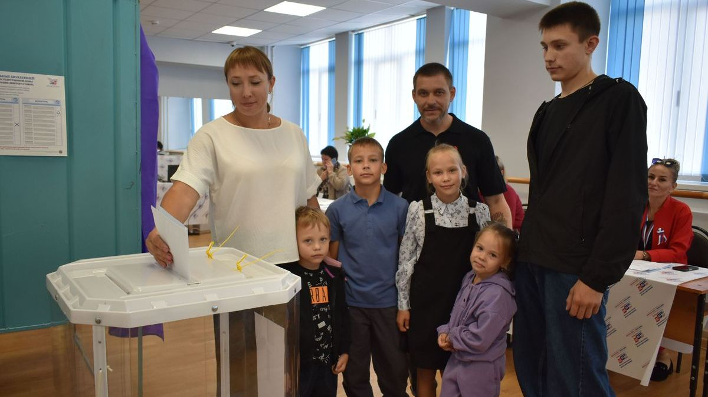
Примечание. Изображение отражает атмосферу, царившую в дни голосования. Источник: новость Правительства Рязанской области, б. д. (https://ryazan.gov.ru/news/407433/). Заголовок и дата публикации недоступны из-за ограничений доступа по IP-адресу.
Рисунок 8
Денис Боков, первый заместитель Председателя Правительства Рязанской области
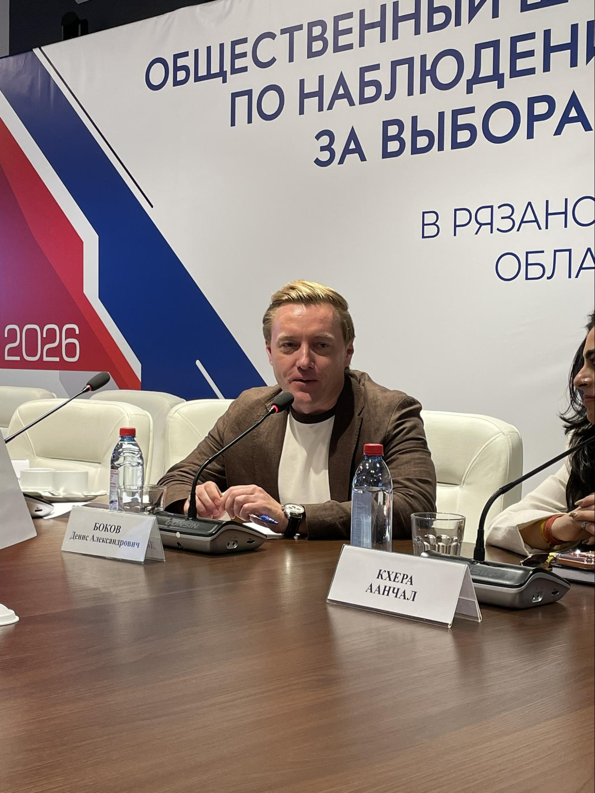
Примечание. Фотография автора, сделанная во время встречи в Штабе общественного наблюдения за выборами Рязанской области.
8.2 Информация на избирательных участках
Все без исключения участки имели надлежащие указатели при входе, на которых однозначно был виден номер избирательного участка (см. рисунок 9). Это существенно для избирателей, поскольку позволяет им определить внутри здания конкретное место, с которого следует начинать процедуру голосования.
Рисунок 9
Вход на избирательный участок № 850, Рязанская область
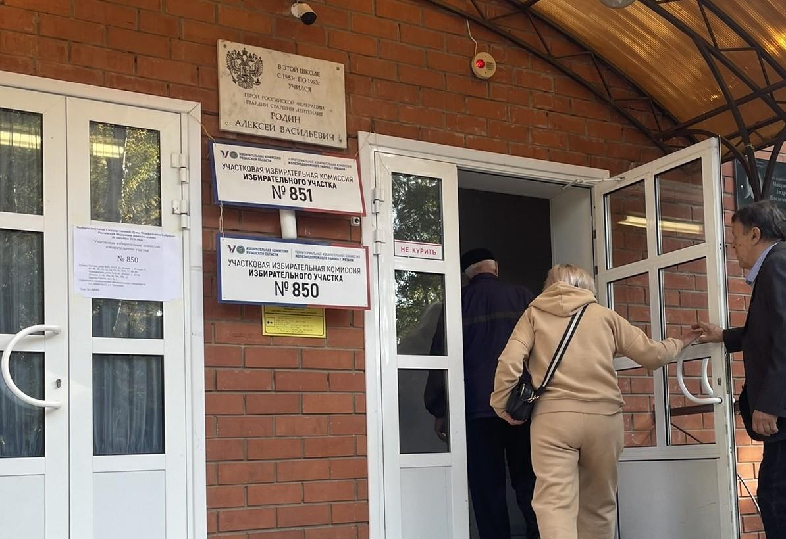
Примечание. На указателях видны номера избирательных участков, размещённых в здании. Фотография автора, сентябрь 2026 г.
Перед входом на избирательные участки, у главной входной двери, была размещена подробная информация о кандидатах по соответствующему округу области (см. рисунки 10 и 11), их политических партиях и их биографиях. Таким образом, избиратели, не располагавшие сведениями о политических партиях и кандидатах, могли ознакомиться с необходимой информацией до голосования. Это особенно важно, поскольку, как и во многих других странах мира, есть люди, которые недостаточно информированы или попросту не интересуются политикой.
Рисунок 10
Список кандидатов по Скопинскому избирательному округу № 158, Рязанская область
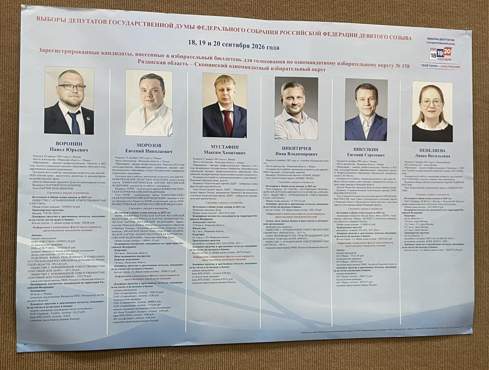
Примечание. На плакате виден список шести кандидатов на депутатский мандат в нижней палате парламента. Фотография автора, сентябрь 2026 г.; плакат изготовлен по заказу Избирательной комиссии Рязанской области.
Рисунок 11
Список политических партий, допущенных к участию в выборах
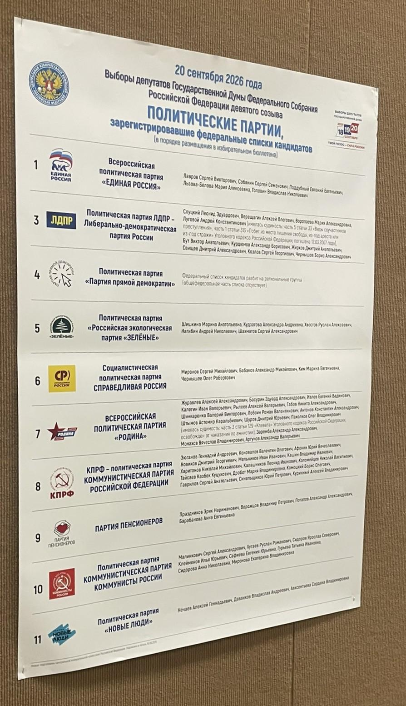
Примечание. Плакат содержит сведения о кандидатах от каждой партии. Фотография автора, сентябрь 2026 г.; плакат Центральной избирательной комиссии Российской Федерации.
Кроме того, можно было ознакомиться с двумя образцами бюллетеней с информацией, необходимой гражданам для правильного осуществления волеизъявления. Важно напомнить, что на этих выборах избиратели должны были заполнить два бюллетеня: один — для выбора предпочитаемого кандидата, другой — для выбора политической партии.
На большинстве участков имелся печатный экземпляр Федерального закона «О выборах депутатов Государственной Думы Федерального Собрания Российской Федерации» (№ 20-ФЗ; Российская Федерация, 2014) (см. рисунок 12). Этот закон специально регулирует выборы депутатов Государственной Думы и применяется совместно с Федеральным законом № 67-ФЗ «Об основных гарантиях избирательных прав и права на участие в референдуме граждан Российской Федерации», комплексно регулирующим порядок организации любого голосования в стране (Российская Федерация, 2002).
Рисунок 12
Экземпляр Федерального закона «О выборах депутатов Государственной Думы Федерального Собрания Российской Федерации» на избирательном участке
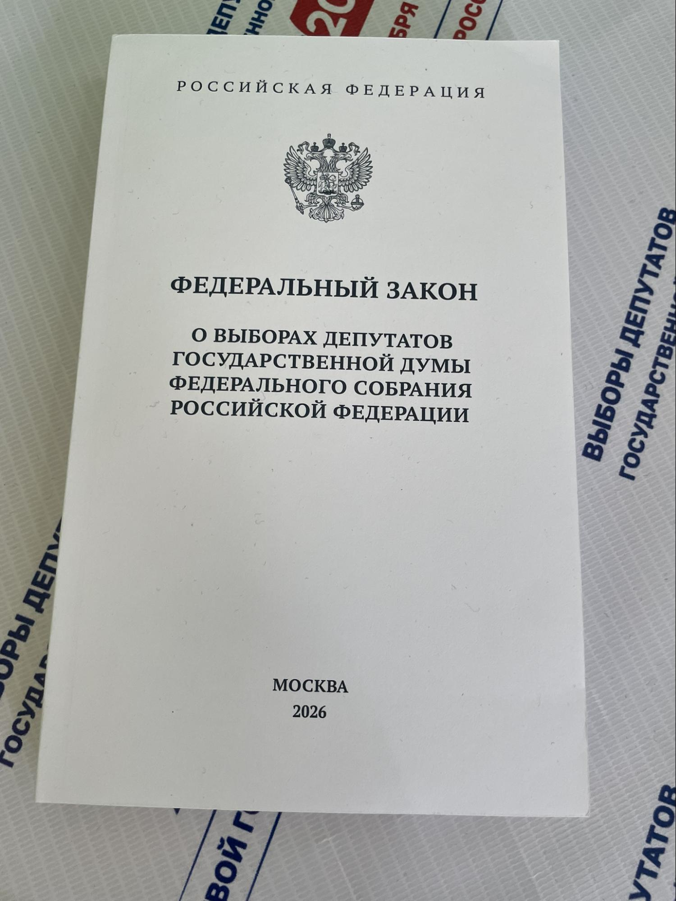
Примечание. Фотография автора, сентябрь 2026 г.
8.3 Принцип тайного голосования
Что касается тайны голосования, то ни по оформлению, ни по заполняемым полям ни один из избирательных бюллетеней не содержал — ни явно, ни неявно — признаков или полей, позволяющих идентифицировать избирателя, и не создавал угрозы раскрытия его личности и предпочтений.
8.4 Кабина для тайного голосования
Можно сказать, что места, предназначенные для заполнения избирателями двух бюллетеней, были минималистичными и простыми. Они не отличались большой площадью, однако вполне подходили для голосования. Внутри находилась ручка, которой избиратель заполнял упомянутые бюллетени.
Кроме того, кабины были закрыты тканевыми шторами и в целом хорошо защищены от взгляда человека, находящегося снаружи. Плотность ткани была достаточной, чтобы исключить возможность увидеть, что происходит внутри кабины (см. рисунок 13).
Важно отметить, что кабины для тайного голосования находились вне геометрической зоны обзора камер видеонаблюдения.
Рисунок 13
Кабины для тайного голосования
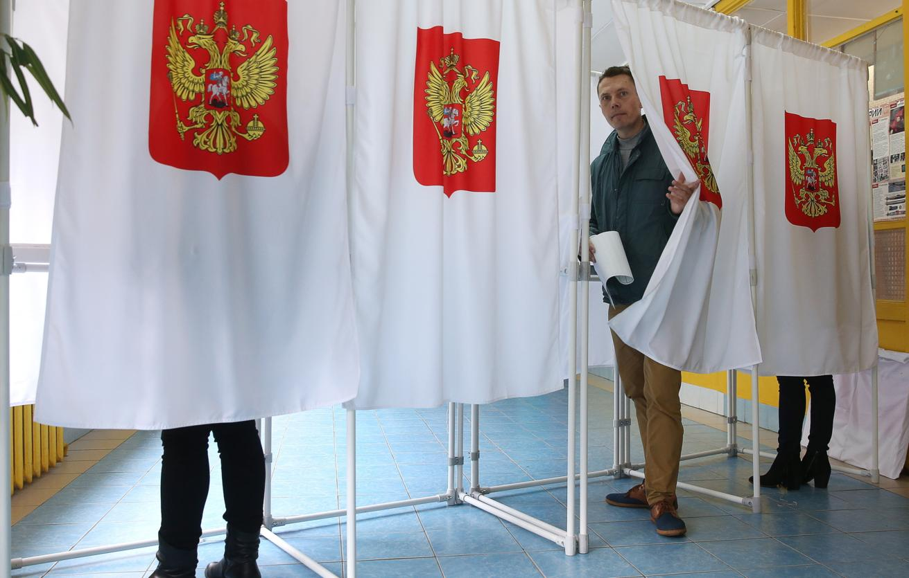
Примечание. Источник: «Основные правила выборов в Госдуму в 2026 году», ТАСС, 2026 (https://tass.ru/info/28116345).
8.5 Ящики для голосования
На ящиках для голосования, в которых находятся бюллетени, по краям установлены четыре пронумерованные пломбы с кодовым обозначением (см. рисунок 14).
На некоторых ящиках, кроме того, имелся внутренний квадратный механизм с четырьмя винтами на каждом краю, что обеспечивало двойную защиту.
8.5.1 Пояснение относительно прозрачности ящиков для голосования
Главная причина — прозрачность и контроль. Когда стенки прозрачны или полупрозрачны, наблюдатели, члены комиссии и сами избиратели могут визуально убедиться, что в ящик до начала голосования не были заранее вброшены подготовленные бюллетени и что впоследствии они не извлекались. Это снижает риски манипуляций и повышает доверие к процессу (РИА Новости, 2026).
Вместе с тем есть важный нюанс: чтобы прозрачность не ставила под угрозу тайну голосования, сами бюллетени разработаны таким образом, что даже сквозь стенку ящика невозможно определить, за кого проголосовал избиратель.
Нормативные акты Центральной избирательной комиссии России устанавливают не только требование «прозрачности», но и конкретные параметры светопропускания: для стационарных ящиков для голосования материал может быть прозрачным (коэффициент светопропускания не менее 90 %) или полупрозрачным (не менее 25 %) (Центральная избирательная комиссия Российской Федерации, 2026).
Рисунок 14
Ящик для голосования
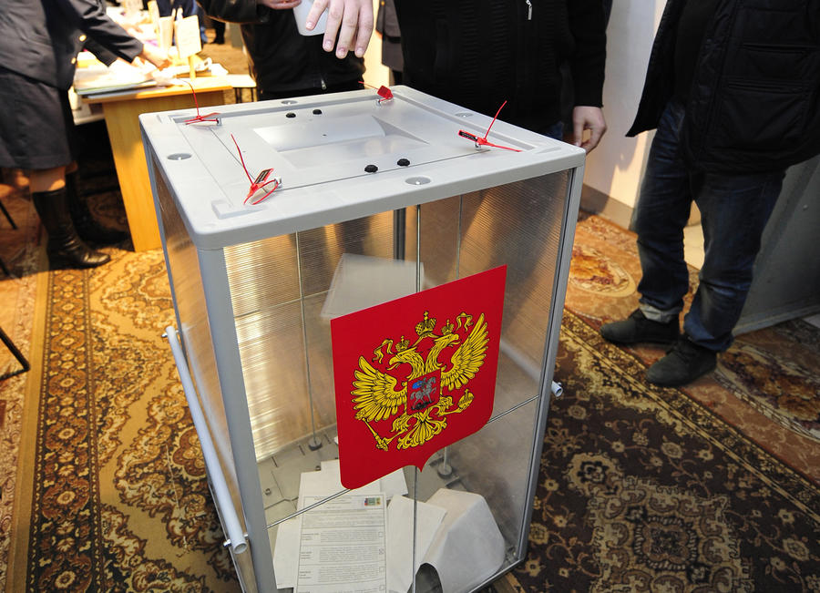
Примечание. На изображении видны степень прозрачности ящика для голосования и защитные меры — пломбы. Источник: публикация «В Первоуральске мужчина забросил в урну для голосования сразу три листа» на новостном портале «Вечерние ведомости» от 18 марта 2018 г. (https://veved.ru/news/103335-v-pervouralske-muzhchina-zabrosil-v-urnu-dlya-golosovaniya-srazu-tri-lista.html).
8.6 Время, затрачиваемое на голосование
В ходе наблюдения мне довелось в реальном времени видеть, как голосовали не менее 15 граждан. Меня приятно удивило небольшое время ожидания, которое потребовалось избирателям, чтобы проголосовать. Лишь пару раз я видел очередь из трёх человек. Очевидно, это связано с продолжительным, трёхдневным голосованием; тем не менее с точки зрения гражданина это весьма положительный аспект. В среднем с момента входа до момента выхода избиратель находился на избирательном участке от 3 до 6 минут. «Узких мест» и заторов на избирательных участках я также не наблюдал.
8.7 Встречи с должностными лицами избирательной системы России
8.7.1 Избирательная комиссия Рязанской области
Международных наблюдателей на выборах принял председатель комиссии Андрей Анатольевич Сидоренко. В ходе встречи нам подробно рассказали о порядке осуществления наблюдения за выборами, о бюллетенях, которые выдаются избирателям, и о том, кто может быть кандидатом в депутаты, а также о других технических аспектах. Одновременно на большом экране в прямом эфире (в режиме стриминга) была организована связь с центральным офисом в Москве, по которой периодически обновлялась информация, касающаяся избирательного процесса (см. рисунок 15).
Рисунок 15
Встреча с председателем Избирательной комиссии Рязанской области Андреем Анатольевичем Сидоренко
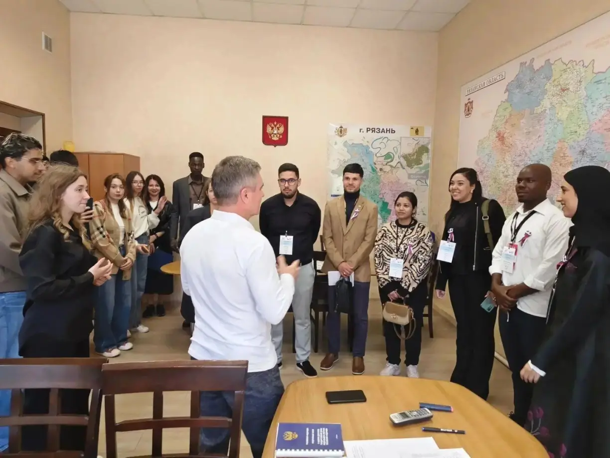
Примечание. Источник: публикация «Электоральные эксперты посетили…» Избирательной комиссии Рязанской области от 18 сентября 2026 г. в социальной сети «Одноклассники» (https://ok.ru/ikro62/topic/158912383776209). Публикация не имеет заголовка; приводится её начало.
8.7.2 Штаб общественного наблюдения за выборами
Ближе к завершению дня голосования, 20 сентября, нас пригласили на встречу со всеми участниками избирательного процесса в Штабе общественного наблюдения за выборами. Присутствовали представители Избирательной комиссии Рязанской области, группа местных и международных наблюдателей, кандидаты в депутаты от политических партий, герои специальной военной операции (СВО) и представители средств массовой информации.
В ходе встречи обсуждались вопросы, касающиеся степени участия граждан и мониторинга избирательных процессов, а также значимость избирательного акта как выражения воли российского народа.
Нам также предоставили возможность задавать вопросы и делиться впечатлениями о проведённом наблюдении. Как и мои коллеги из Аргентины, Чада и Индии, я поделился личными впечатлениями с присутствующими (см. рисунки 16 и 17). Часть сказанного отражена в главе «Выводы».
Рисунок 16
Выступление автора в Штабе общественного наблюдения за выборами Рязанской области
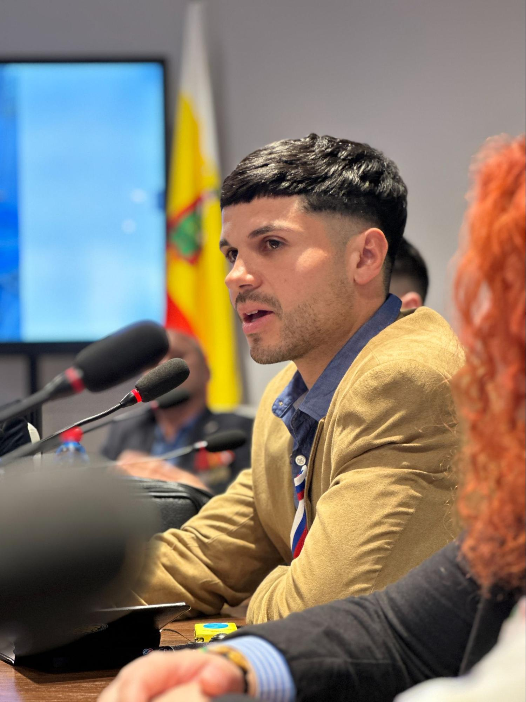
Примечание. Момент, когда автор поделился выводами о своей работе в качестве международного наблюдателя. Фотография предоставлена коллегой-наблюдательницей из Йемена.
Рисунок 17
Встреча с участниками избирательного процесса в Штабе общественного наблюдения за выборами Рязанской области
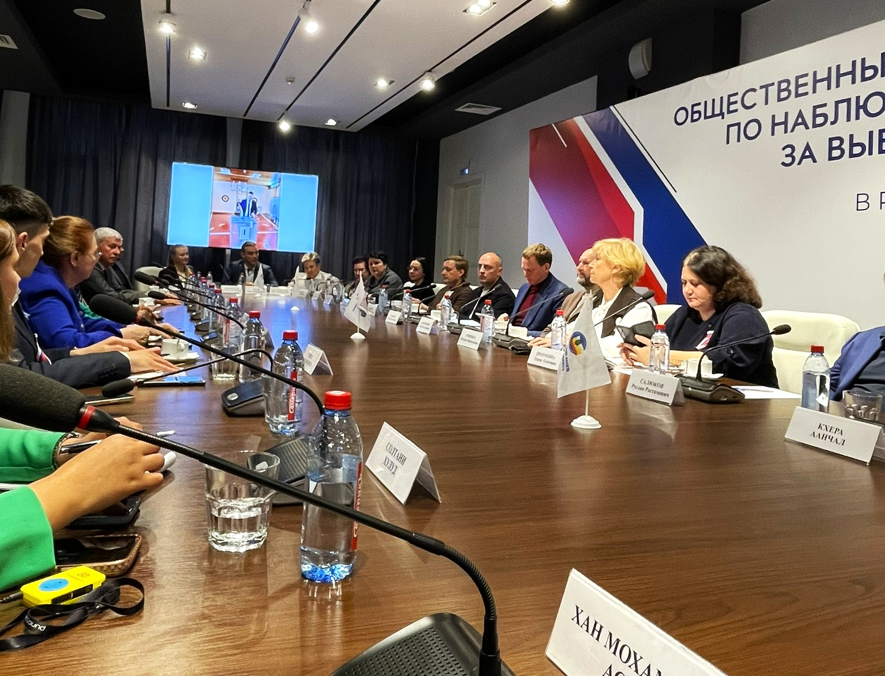
Примечание. Фотография автора, 20 сентября 2026 г.
9 Сравнительный анализ российской и уругвайской избирательных систем
Избирательные системы России и Уругвая имеют общую цель — преобразование голосов в мандаты, однако реализуют её на основе существенно различающихся моделей.
Что касается формулы, то Государственная Дума избирается по смешанной системе, предусматривающей 450 мандатов: 225 — по пропорциональной системе (по партийным спискам) и 225 — по одномандатным избирательным округам; голоса при этом подсчитываются независимо друг от друга. Уругвай, напротив, применяет «полное пропорциональное представительство» (representación proporcional integral) в отношении 99 членов Палаты представителей (Cámara de Representantes; Восточная Республика Уругвай, 1967, ст. 77) с минимумом в два депутата от каждого департамента и без суммирования голосов по сублемам (sublemas — внутрипартийным фракциям) (ст. 88). Мандаты распределяются сначала между лемами (lemas — партийными обозначениями) в масштабе страны, а затем оспариваются между фракциями внутри каждого департамента (Buquet, 1994).
Различается и структура выбора, предлагаемого избирателю. В России избиратель располагает двумя бюллетенями — партийным и персональным, — а также допускается самовыдвижение кандидатов (самовыдвиженцы). В Уругвае избиратель выбирает один избирательный бюллетень (hoja de votación) по леме, при этом списки являются закрытыми и блокированными, а кандидатур вне партий не существует.
Что касается порядка голосования, то в России оно проходит в течение трёх дней (с 08:00 до 20:00), допускаются голосование вне помещения для голосования и дистанционное электронное голосование (ДЭГ), на избирательных участках ведётся видеонаблюдение. В Уругвае голосование проходит в один день — в последнее воскресенье октября каждые пять лет (Восточная Республика Уругвай, 1967, ст. 77), с 8:00 до 19:30, с использованием избирательного бюллетеня (hoja de votación) в конверте и с подсчётом голосов непосредственно в округе-circuito (Избирательный суд [Corte Electoral], 2024). Кроме того, голосование является добровольным в России и обязательным в Уругвае (ст. 77): тот, кто не голосует, должен обосновать неявку, а находящийся за рубежом не может голосовать за границей — в отличие от 1 816 504 российских избирателей, зарегистрированных за пределами страны (см. таблицу 2).
Различается и организация избирательной администрации: в России насчитывается около 100 000 иерархически выстроенных комиссий, тогда как в Уругвае голоса в каждом округе (circuito) принимает комиссия по приёму голосов (Comisión Receptora de Votos) в составе трёх членов, назначаемых департаментской избирательной комиссией (Junta Electoral departamental) (Избирательный суд, 2024).
Вместе с тем существуют и значимые совпадения. Обе страны гарантируют тайное и всеобщее голосование, используют элемент пропорционального представительства, проводят выборы в законодательный орган с пятилетней периодичностью, применяют бумажные бюллетени и закрытую кабину при очном голосовании, располагают специализированным избирательным органом и подсчитывают голоса непосредственно на участке в присутствии делегатов или наблюдателей от партий. Это позволяет предположить, что, несмотря на различия, обе системы опираются на общую логику прозрачности и контроля в месте голосования.
10 Выводы
Как международный наблюдатель на выборах, исходя из своих наблюдений и оценок, считаю возможным утверждать, что российская избирательная система на данных выборах обеспечила соблюдение гарантий и основополагающих принципов голосования, определённых в нормативной правовой базе Федерального закона № 67-ФЗ Российской Федерации (Российская Федерация, 2002). Я увидел чётко организованную, ориентированную на гражданина, механизированную и высокотехнологичную систему, в которой применяются разнообразные информационные технологии. Несмотря на определённую жёсткость, для гражданина она весьма гибка: этому способствуют возможность голосовать в течение трёх дней, возможность дистанционного электронного голосования и голосования вне помещения для голосования.
Я столкнулся с современной, актуализированной избирательной системой, которая использует информационные технологии в различных процессах, делая их более эффективными. Это косвенно свидетельствует о проактивной правовой базе, допускающей применение таких инструментов в деятельности, связанной не больше и не меньше, чем с основополагающими правами человека.
Важно отметить и высоко оценить неизменную доброжелательность и готовность содействовать со стороны российских избирательных органов, а также специалистов и профессионалов, участвовавших в обучении, членов избирательных комиссий и сотрудников избирательных штабов, членов участковых избирательных комиссий и других наблюдателей — как местных, так и международных, — выполнявших задачи, аналогичные моим. На любые вопросы, запросы и сомнения я всегда получал содержательные ответы и встречал радушное отношение.
На личном уровне признаю, что это был один из самых интересных профессиональных опытов в моей жизни. За время службы в государственных органах Уругвая я проходил обучение, изучал уругвайскую избирательную систему и работал на выборах, поэтому возможность увидеть различия, нюансы и сходства российской и уругвайской систем (см. главу 9) показалась мне увлекательной. Несмотря на то что нас разделяют тысячи километров и у нас совершенно разные истории, правовые традиции и корни, как демократические нации мы имеем больше общего, чем можно себе представить.
Список источников
АиФ Рязань. (2026, 21 сентября). Подведены итоги голосования на выборах в Госдуму в Рязанской области. https://rzn.aif.ru/society/podvedeny-itogi-golosovaniya-na-vyborah-v-gosdumu-v-ryazanskoy-oblasti
Банк России. (б. д.). Экономический профиль Рязанской области [Официальный веб-сайт]. https://www.cbr.ru/ryazan/ekonom_profil/
Вечерние ведомости. (2018, 18 марта). В Первоуральске мужчина забросил в урну для голосования сразу три листа. https://veved.ru/news/103335-v-pervouralske-muzhchina-zabrosil-v-urnu-dlya-golosovaniya-srazu-tri-lista.html
Восточная Республика Уругвай. (1967). Constitución de la República [Конституция Республики] (действующий текст, ст. 77 и 88). Центр официальной информации (IMPO). https://www.impo.com.uy/bases/constitucion/1967-1967
Избирательная комиссия Рязанской области. (2026, 18 сентября). Электоральные эксперты посетили… [Публикация]. Одноклассники. https://ok.ru/ikro62/topic/158912383776209
Избирательный суд (Corte Electoral). (2024). Instructivo para integrantes de Comisiones Receptoras de Votos: Elecciones Nacionales 2024 [Инструкция для членов комиссий по приёму голосов: национальные выборы 2024 года]. https://www.gub.uy/corte-electoral/sites/corte-electoral/files/documentos/publicaciones/INSTRUCTIVO%20CRV%202024.pdf
МедиаРязань. (2026, 18 марта). В Рязанской области изменилась нумерация избирательных округов на выборах в Госдуму. https://mediaryazan.ru/news/detail/584274.html
Организация Объединённых Наций. (2005). Declaración de principios para la observación internacional de elecciones y Código de conducta para observadores internacionales de elecciones [Декларация принципов международного наблюдения за выборами и Кодекс поведения международных наблюдателей на выборах]. https://aceproject.org/ero-en/misc/declaration-of-principles-for-international-1/view
Правительство Рязанской области. (б. д.). [Новость; заголовок недоступен]. https://ryazan.gov.ru/news/407433/
РИА Новости. (2026, 18 сентября). Наблюдатель с Комор поинтересовался, почему урны для голосования прозрачные. https://ria.ru/20260918/vybory-2118433377.html
Российская Федерация. (2002, 12 июня). Федеральный закон № 67-ФЗ «Об основных гарантиях избирательных прав и права на участие в референдуме граждан Российской Федерации». Президент России. http://www.kremlin.ru/acts/bank/18173
Российская Федерация. (2014, 22 февраля). Федеральный закон № 20-ФЗ «О выборах депутатов Государственной Думы Федерального Собрания Российской Федерации». http://pravo.gov.ru/proxy/ips/?docbody=&nd=102171479
Рязанские ведомости. (2026, 22 января). На 1 января 2026 года численность избирателей в Рязанской области составила 865 194 человека. https://rv-ryazan.ru/na-1-yanvarya-2026-goda-chislennost-izbiratelej-v-ryazanskoj-oblasti-sostavila-865-194-cheloveka/
ТАСС. (2026, 17 сентября). Основные правила выборов в Госдуму в 2026 году. https://tass.ru/info/28116345
Территориальная избирательная комиссия Пролетарского района города Ростова-на-Дону. (2026, 19 сентября). Итоги проекта «ИнформУИК»: организаторы выборов посетили более 48 миллионов домовладений в 87 регионах России. Избирательная комиссия Ростовской области. https://rostov-proletarsky.ikro.ru/news/news_86198.html
Центральная избирательная комиссия Российской Федерации. (2026, 20 мая). Постановление № 6/63-9 «О внесении изменения в постановление Центральной избирательной комиссии Российской Федерации от 29 января 2014 года № 214/1405-6 „О нормативах технологического оборудования для участковых комиссий при проведении выборов, референдумов в Российской Федерации“». https://rulaws.ru/acts/Postanovlenie-TSIK-Rossii-ot-20.05.2026-N-6_63-9/
Buquet, D. (1994). Representación proporcional y democracia en Uruguay [Пропорциональное представительство и демократия в Уругвае] [Диссертация]. Universidad de la República. https://www.colibri.udelar.edu.uy/jspui/bitstream/20.500.12008/7498/6/TCP_BuquetDaniel.pdf
Center for International Interaction and Cooperation. (б. д.). CIIC — Home. Дата обращения: 8 октября 2026 г. URL: https://ciic.site/en/
Constituencies of Russia. (б. д.). В Wikipedia. Дата обращения: 8 октября 2026 г. URL: https://en.wikipedia.org/wiki/Constituencies_of_Russia
GAS Vybory. (б. д.). В Wikipedia. Дата обращения: 8 октября 2026 г. URL: https://en.wikipedia.org/wiki/GAS_Vybory